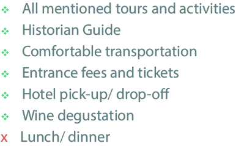

SPIRITUAL PLACES
1-3prs.
4-7prs.
8-12prs.
000$
000$
000$
5 days
Price Includes

Schedule
DAY 1.
Garni. Geghard. EtchmiadzinLet’s go to the temple of Garni, which dates back to the 1st
century AD, it is the only Greco-Roman surviving pagan
temple in the country.
From Garni let’s drive To Geghard where the medieval
monastery is located, in the Kotayk province, which is about
an hour’s drive from Yerevan. This monastery complex was
founded back in the 4th century and is carved inside a rock.
Geghard or Geghardavank “the monastery of the spear”, a
UNESCO World Heritage Site because it was once home to
the spear that pierced Jesus Christ's side on the crucifix.
Etchmiadzin. This is the fourth largest city in Armenia and it
is located 20kms west of Yerevan. It’s Armenia’s spiritual
capital as it is home to some of the oldest churches and
cathedrals on earth. Five of them are listed as UNESCO
World Heritage Sites.
DAY 2.
Khor Virap. Areni. NoravankLet’s go to the Monastery of Khor Virap, which is the closest
point to see Mount Ararat. We will head south to the village
Areni for some wine tasting followed by the magnificient
13th century Noravank “New Monastery”.
DAY 3.
Saghmosavank.Alphabet. AmberdSaghmosavank monastery of the Psalms about 45 minutes
North of Yerevan, the view of the gorge & the Kasagh River
is breathtaking. Mt Ara with its mythical legends is also
visible.
Close by is another interesting site to see, the Armenian
Alphabet Monument. Built in 2005 in this open field you can
witness the Alphabets made out of colorful orange & black
tufa the native rock of Armenia.
Short drive away at a high altitude of 2300 meters the 7th
century fortress of Amberd "fortress in the clouds" is
located. With a panoramic view of both mountains Aragats
& Ararat. There is also the 11th century church at a short
hiking distance.
DAY 4.
Sevan. Dilijan. Haghartsin. GoshavankLet’s go to Lake Sevan, which is the largest, & highest fresh
water lake in the Caucasus region. The unique Sevan trout &
crayfish are important food source. Take the steps up to visit
the 9th century Monastery complex. Enjoy the view &
breathe the fresh air.
To Davush Province & the resort city of Dilijan “Armenian
Switzerland”. With ski resorts, spas & natural parks. Forests
covering most of the region. Clean air good for hiking &
enjoying a relaxing day. Lake Parz “clear” perfect spot for a
cup of coffee inside the national park.
Goshavank 12th century “Monastery of Gosh” in the Tavush
Province North of Yerevan. A famous khatchkar “cross
stone” known as the needle carved for its superb
workmanship created in 1291 is erected at the entrance of
the church.

© Hrair Hawk